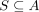
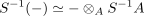
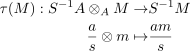
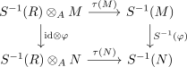
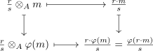

localization as extension of scalars
1. Proposition
Let  be a ring,
be a ring,

a multiplicatively closed subset. Then the localization functor for modules is naturally isomorphic to the tensoring functor
2. Proof
corollary of:
Let

be the isomorphism (tensor product with the localized ring and localization of a module). It remains to show that this is natural
2.1. naturality
Given a module-homomorphism  suffices to show that
suffices to show that

commutes
element chasing gives

hence we are done by natural isomorphism and isomorphism on the objects